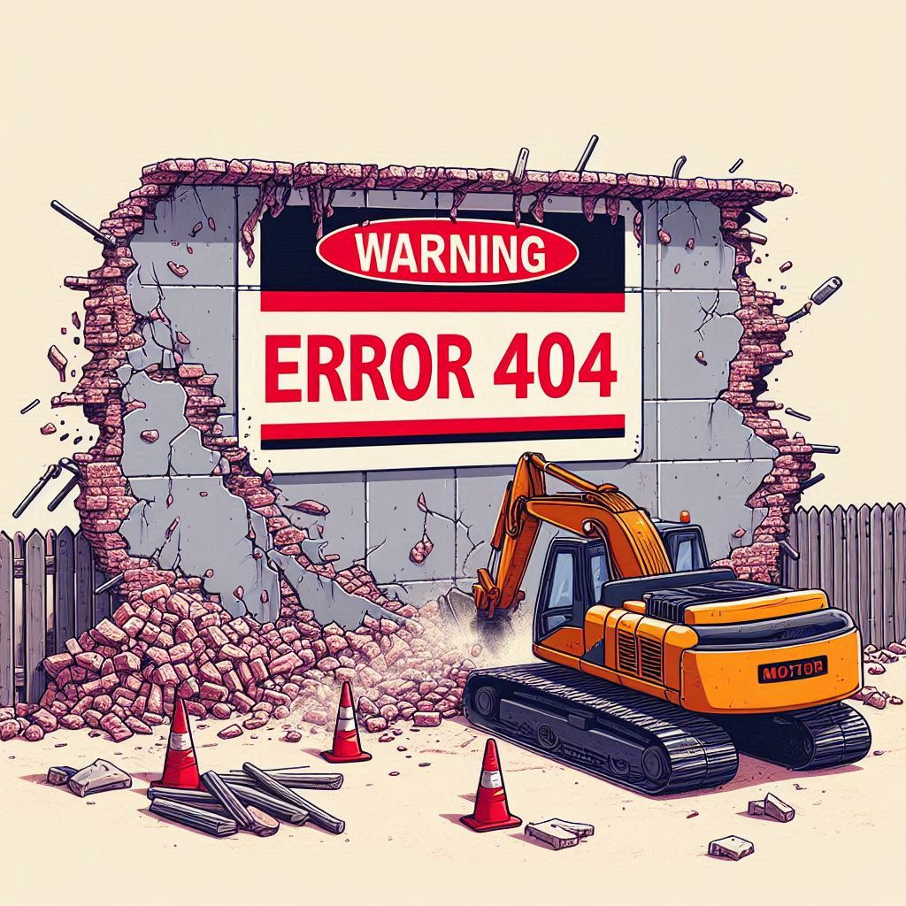

<main>
    <div class="page-not-found">
        <h1>Erreur 404</h1>
        <p>Il n'y a pas Artisans Ici ... </p>

        <a routerLink="/">Retour à la page d'accueil <i class="fa-solid fa-arrow-right"></i></a>
    </div>
    <div class="image">
      
    </div>
</main>
